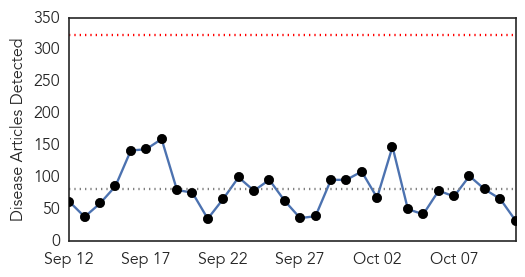
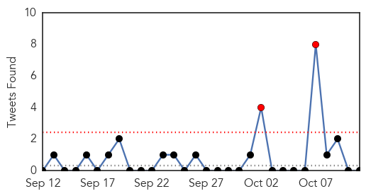
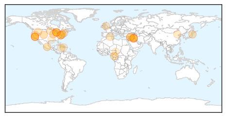
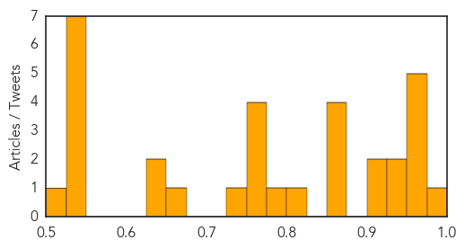

Toggle navigation
Early Warning
Daily Alerts
Unknown
Oct 11, 2014
Compare to:
-
Dengue Fever
Hemmorhagic Fever
Mold/Fungal Infection
Influenza
Meningitis
Pertussis / Whooping Cough
Middle East Respiratory Syndrome
Cholera
Hepatitis
Chikungunya
Yellow Fever
Bubonic Plague
West Nile Virus
Swine Flu
Ebola
Measles
Mumps
30 Day Trends
Web: 0
alerts
, 0
warnings
Twitter: 1
alerts
, 0
warnings
Top Articles:
0.995
Another Toddler Dies From Enterovirus D68
0.972
Michigan toddler dies from enterovirus D68
0.964
Michigan toddler dies of enterovirus infection
0.963
Michigan toddler dies of enterovirus infection
0.958
California has 32 Confirmed Cases of Enterovirus
0.953
Michigan girl, 21 months, becomes second confirmed child death from enterovirus D68 this year
0.938
Toddler Dies Of Enterovirus D68 In Michigan
0.926
Enterovirus blamed in death of Michigan toddler
0.917
Chicago Tribune
0.917
Chicago Tribune
0.866
Third car bomb in Baghdad on Saturday night kills 15
0.866
Two Baghdad car bombs kill 19, wound dozens
0.866
Ten Chinese among 27 hostages freed in Cameroon
0.866
Quake strikes 110 miles off east coast of Japan
0.803
Michigan reports Enterovirus D68 death in Clinton Township toddler
0.795
Is Your Doctor or Nurse Vaccinated Against the Flu? – The Yeshiva World
0.755
KRNV, Reno, NV
0.755
KRNV, Reno, NV
0.755
KRNV, Reno, NV
0.755
KRNV, Reno, NV
0.728
(Not-So) Fun Facts About Norovirus, The Leading Source of Food Poisoning Outbreaks in America
0.662
England to have more TB cases than America
0.649
Child dies, others admitted to St. Thomas Hospital with suspected food poisoning
0.645
Calls for better mental health care infrastructure- China.org.cn
0.549
IS group intensifies assault on Syria’s Kobane
0.549
In pictures: Paris Kurds rally in support of Syria’s Kobane
0.549
Kurds call for more airstrikes against IS group in Syria’s Kobane
0.549
French FM praises ‘visionator’ Schwarzenegger
0.549
String of car bombs kill dozens in Baghdad
0.549
Twenty-seven hostages freed in Cameroon
0.549
United in immunity: UN in the dock over Haiti cholera outbreak
0.515
Third case of rabies confirmed in 2014; state officials issue notice to residents
Top Tweets:
No tweets found for Oct 11, 2014
Web/News Articles

Tweets

Article Locations

Article Confidences
